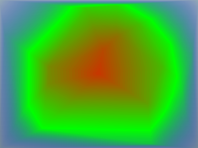

The
ValuedHeatMap component takes three parameters from the objects provided by the
data provider: the
x location of the point,
the
y location of the point, and the
value of the point. These parameters are used to construct
the isometric contour of the set of points using the
values property. The
values property will be used to determine the value at which an isometric
contour will be drawn. The more values you provide in the
values property, the smoother the drawing, but the
heavier the display time and memory consumption.
The following example computes an array of values giving
more precise and smooth colors. The values are computed using a function
to avoid a long enumeration in MXML code.
<?xml version="1.0" encoding="utf-8"?>
<mx:Application xmlns:mx="http://www.adobe.com/2006/mxml"
xmlns:ilog="http://www.ilog.com/2007/ilog/flex"
layout="absolute">
<mx:Script>
<![CDATA[
private function computeValues():Array {
var ret:Array = [];
for(var i:int = 0; i < 100; i++)
ret.push(i);
return ret;
}
]]>
</mx:Script>
<ilog:ValuedHeatMap width="100%" height="100%" values="{computeValues()}">
<ilog:dataProvider>
<mx:XMLList>
<point x = "15.6" y = "227.8" value = "25.9" />
<point x = "30.1" y = "153.9" value = "43.8" />
<point x = "82.4" y = "272.0" value = "44.0" />
<point x = "165.3" y = "299.1" value = "52.5" />
<point x = "192.8" y = "104.3" value = "86.6" />
<point x = "131.2" y = "137.3" value = "82.2" />
<point x = "190.4" y = "270.6" value = "66.6" />
<point x = "253.9" y = "17.1" value = "57.1" />
<point x = "9.8" y = "79.3" value = "24.1" />
<point x = "330.9" y = "290.9" value = "30.8" />
<point x = "94.5" y = "174.7" value = "71.2" />
<point x = "193.7" y = "242.3" value = "76.3" />
<point x = "157.7" y = "196.5" value = "83.7" />
<point x = "376.5" y = "130.8" value = "39.6" />
<point x = "333.7" y = "184.0" value = "59.6" />
<point x = "277.7" y = "76.0" value = "71.6" />
<point x = "351.1" y = "29.1" value = "30.0" />
<point x = "188.4" y = "174.2" value = "88.8" />
<point x = "379.5" y = "208.9" value = "32.9" />
<point x = "70.4" y = "40.9" value = "44.1" />
</mx:XMLList>
</ilog:dataProvider>
<ilog:colorModel>
<ilog:ColorModel>
<ilog:ColorEntry color="0x0000ff" limit="0" alpha="0"/>
<ilog:ColorEntry color="0x00ff00" limit="50" />
<ilog:ColorEntry color="0xff0000" limit="100" alpha="1"/>
</ilog:ColorModel>
</ilog:colorModel>
</ilog:ValuedHeatMap>
</mx:Application>
The following figure shows the resulting smoother heatmap.
